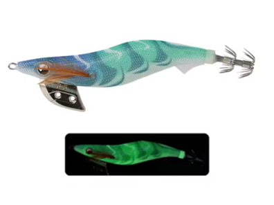

Egis Low Cost
Inicio
Señuelos
YAMASHITA
DTD
YO-ZURI
LETOYO
KINGDOM
SQUID KING
OTROS
Componentes
Color Egis
Acerca de
Letoyo Neon Bright-B – Análisis completo

🎨 Características
Color base:
Verde turquesa con patrones ondulados más oscuros, creando un contraste muy marcado.
Ojos:
Oscuros con reflejo visible, destacando sobre el cuerpo luminoso.
Brillo:
Luminiscencia verde intensa y uniforme en todo el cuerpo.
Acabado:
Tela translúcida que potencia el efecto glow y mantiene buena visibilidad incluso en profundidad.
🌤️ Condiciones ideales de uso
🌙
Noche:
Muy efectivo gracias a su potente brillo verde.
🌊
Aguas turbias:
El glow destaca claramente frente al fondo.
☁️
Días nublados:
Mantiene buena visibilidad sin necesidad de luz directa.
🌅
Amanecer / atardecer:
Ideal cuando la luz cae y los calamares aumentan su actividad.
🪸
Fondos rocosos o profundos:
El brillo ayuda a localizar el señuelo entre sombras.
🧠 Comportamiento esperado
👉 Egi de alta atracción visual, diseñado para provocar ataques rápidos.
👉 Muy eficaz con calamares activos y en jornadas difíciles.
👉 Funciona especialmente bien cuando colores naturales no dan resultado.
👉 Ideal como primer señuelo al comenzar la sesión nocturna.
⚙️ Resumen práctico
Condición
Eficiencia
☀️🌊 Día soleado / agua clara
🟡 Media
☁️💚 Día nublado / aguas medias
🟢 Alta
🌙🌑 Noche / aguas oscuras
🟢🟢 Muy alta
🦑😴 Calamares pasivos
🟡 Media
🦑🔥 Calamares agresivos
🟢🟢 Muy alta
🛒 Comprar en AliExpress